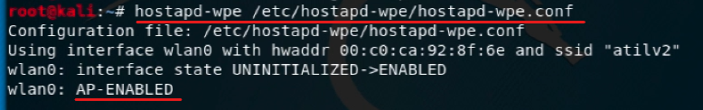

WPA Enterprise
WPA Enterprise
Genelde şirketlerin kullandığı WPA kablosuz ağlar için geliştirilmiş bir şifreleme standardıdır. Bu standart daha önceki WEP (Wired Equivalent Privacy- Kabloya Eş Güvenlik) sisteminin yetersizliğine karşılık geliştirilmiştir. WPA, veri şifreleme ve kullanıcı kimlik denetimi alanlarında bilgi güvenliği sunmaktadır
{kind=link}
Her kullanıcının username ve password kendine özeldir o nedenle WPA Enterprise ile şifrelenmiş bir ağa sızmak çok zordur.
WPA Enterprise Kurulumu
configure dosyası ayarları

gerekli ayarlamaları yapıp kayıt edip çıkıyoruz.
conf dosyasında yaptığımız ayarların geçerli olması ve oluşturacağımız WPA Enterprise yayınını başlatmak için 2 adım var;
1
2

artık WPA Enterprise yayını gördüğünüz gibi verdiğimiz ssid ile başladı.
ağa bağlanırken bu tarz username ve pass soran bir pencere gelecektir.
Kullanıcı burada username ve password girdiğinde;
terminalde bu şekilde bir sonuçla karşılaşacağız. Gördüğünüz gibi username ele geçirdik, challenge ve response ise crypted (şifrelenmiş) şekilde de olsa görebildik. Artık ctrl+c yapıp yayını durdurabiliriz daha fazla dikkat çekmeye gerek yok çünkü alacağımızı aldık.
Şifreyi Kırmak
Bize bir wordlist lazım. Elimizde hazır varsa onu kullanabilir, crunch ile wordlist oluşturabiliriz.
Wordlist hallettiysek şimdi asleap ile şifreyi kırıyoruz
WPA Enterprise yayını açıp kullanıcıdan aldığımız username, challenge ve response değerlerini burada asleap kullanırken giriyoruz.
ve şifreyi ele geçirdik.